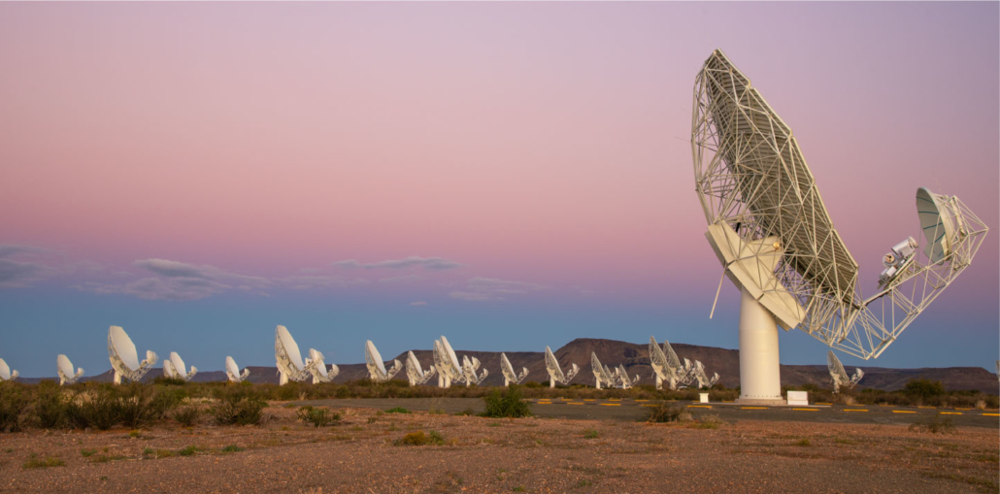
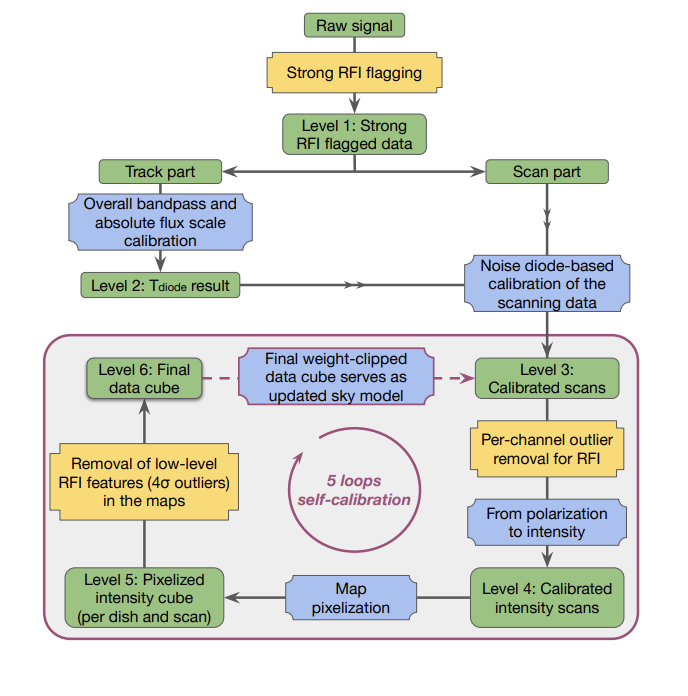
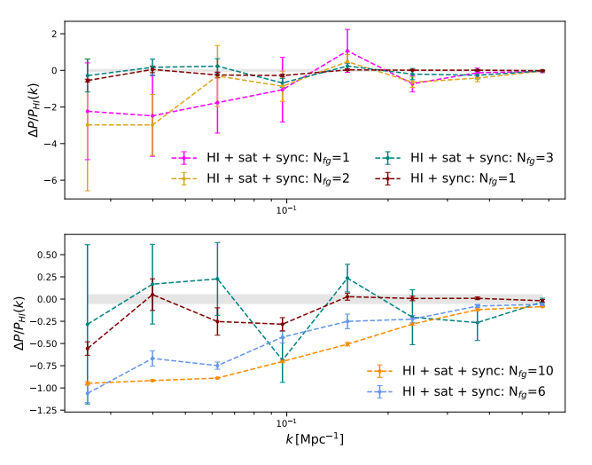
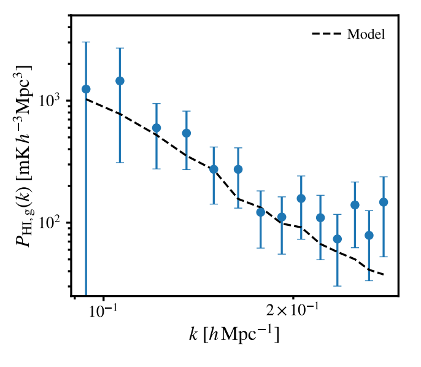
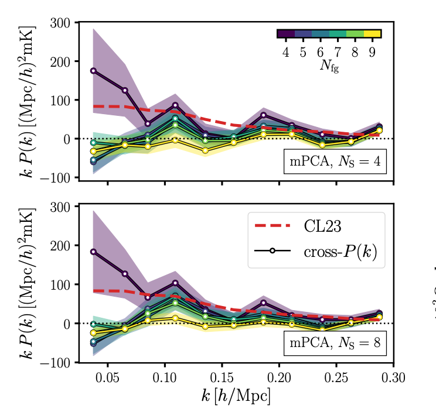
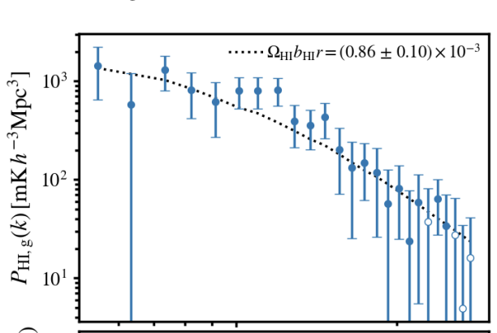
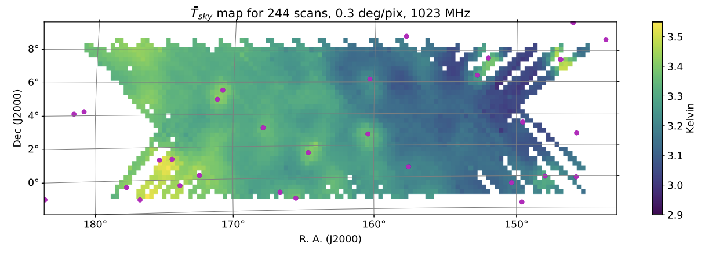
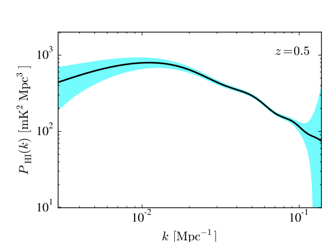

We are an international collaboraton of astronomers working on cosmology with radio surveys using the MeerKAT telescope. Our survey uses the emission from cold gas namely Neutral Hydrogen (HI) to trace the position of galaxies and through that the distribution of matter. Rather than detecting individual galaxies, we are employing the technique of HI intensity mapping to detect the combined emission from many galaxies in a continuous low-resolution map. The HI distribution in the intensity maps can be used to measure the underlying cosmology and through that constrain parameters such as the expansion rate of the Universe. MeerKLASS is a survey conducted with the South African telescope MeerKAT creating HI intensity maps of the Universe redshift 1.5, equivalent to mapping the past 9 billion years of the Universe's evolution. So far, we have robustly detected the cosmological signal in our maps at z=0.44 and currently we are surveying the Southern Sky building for higher redshifts up towards many thousand square degrees of sky coverage. You can find more details on our HI intensity mapping survey area as well as HI intensity mapping data release here.
The MeerKAT radio array based in the Karoo desert in South Africa is a world-class radio interferometer that can be used as a “single-dish” array to access the large cosmic scales that are not accessible to the interferometer, while achieving massive survey speeds compared to actual single dish telescopes. The MeerKLASS collaboration (MeerKAT Large Area Synoptic Survey) has pioneered the approach of using an entire array in a fast-scanning multi-dish autocorrelation mode. We developed a single-dish analysis pipeline successfully calibrating the dual-polarisation autocorrelation data from 64 dishes using the L-band receivers and 11h of data. We produced accurate maps of point sources and diffuse Galactic emission, extracting its spectral index over a 300 deg2 patch of the sky. We were also able to measure the cosmological clustering signal from MeerKAT intensity maps and WiggleZ galaxies, achieving a 7.7σ detection of the cross-correlation power spectrum in the RFI-free frequency range 1015–973 MHz (0.40 < z < 0.46). Combining all the dishes, we achieved an equivalent single-dish observing time of over 600h, making this one of the most sensitive HI IM observations to date. In 2022 a short pilot observation in the UHF band over the same area was also performed, producing calibrated sky maps over the 550–1050 MHz band and confirming that our pipeline can be successfully applied in the UHF. Ongoing deeper observations in UHF have the goal of producing the first direct measurements of the HI power spectrum over a wide redshift range and detecting the Baryon Acoustic Oscillation (BAO) scale (~150 Mpc) with SNR ≈ 4–8, and making a 2% measurement of the power spectrum on ultra-large (~1 Gpc) scales around the matter-radiation equality peak.

The image above shows our custom-built calibration pipeline developed by Jingying Wang.

Radio frequency interference (RFI) is emitted from various sources, terrestrial or orbital, and creates a nuisance for ground-based 21-cm experiments. In particular, single-dish observations will be highly susceptible to RFI due to their wide primary beam and sensitivity. This work aimed to simulate the contamination effects from the Radio Navigational Satellite System (RNSS) within the 1100-1350 (MHz) frequency band. The simulation can be divided into two parts: (i) satellite positioning, emission power, and the beam response on the telescope, and (ii) calibration of the satellite signals to data to improve the original model. We utilize previously observed single-dish L-band data from the Meer-Karoo Array Telescope (MeerKAT), which requires special calibration to account for regions contaminated by satellite-based RFI. We find that we can recreate the satellite contamination with high accuracy around its peak frequencies provided the satellite is not too close to the telescope's pointing direction. The simulation can predict satellite movements and signals for past and future observations, aiding in RFI avoidance and testing novel cleaning methods. The predicted signal sits below the noise in the target cosmology window in the L band (970-1015 MHz) making it difficult to confirm any out-of-band emission from satellites. However, in our simulations, this contamination still overwhelmed the 21-cm auto-power spectrum. Nevertheless, it is possible to detect the signal in cross-correlations after mild foreground cleaning. Whether such out of band contamination does exist will require further characterization of the satellite signals far away from their peak frequencies.

We present results from MeerKAT single-dish H I intensity maps, the final observations to be performed in L-band in the MeerKAT Large Area Synoptic Survey (MeerKLASS) campaign. The observations represent the deepest single-dish H I intensity maps to date, produced from 41 repeated scans over 236deg2 , providing 62 h of observational data for each of the 64 dishes before flagging. By introducing an iterative self-calibration process, the estimated thermal noise of the reconstructed maps is limited to ∼1.21 mK ( 1.2× the theoretical noise level). This thermal noise will be subdominant relative to the H I fluctuations on large scales ( k≲0.15hMpc−1 ), which demands upgrades to power spectrum analysis techniques, particularly for covariance estimation. In this work, we present the improved MeerKLASS analysis pipeline, validating it on both a suite of mock simulations and a small sample of overlapping spectroscopic galaxies from the Galaxy And Mass Assembly (GAMA) survey. Despite only overlapping with ∼25 per cent of the MeerKLASS deep field, and a conservative approach to covariance estimation, we still obtain a >4σ detection of the cross-power spectrum between the intensity maps and the 2269 galaxies at the narrow redshift range 0.39 < z 0.46 . We briefly discuss the H I autopower spectrum from these data, the detection of which will be the focus of follow-up work. For the first time with MeerKAT single-dish intensity maps, we also present evidence of H I emission from stacking the maps onto the positions of the GAMA galaxies.

Removing contaminants is a delicate yet crucial step in neutral hydrogen (HI) intensity mapping, often considered the technique's greatest challenge. Here, we address this challenge by analysing HI intensity maps of about 100 deg 2 at redshift z≈0.4 collected by the MeerKAT radio telescope, a SKA Observatory (SKAO) precursor, with a combined 10.5-hour observation. Using unsupervised statistical methods, we remove the contaminating foreground emission and systematically test step-by-step common pre-processing choices to facilitate the cleaning process. We also introduce and test a novel multiscale approach, where data is redundantly decomposed into subsets referring to different spatial scales (large and small), and the cleaning procedure is performed independently. We confirm the detection of the HI cosmological signal in cross-correlation with an ancillary galactic data set without the need to correct for signal loss. In the best set-up reached, we constrain the HI distribution through the combination of its cosmic abundance ( ΩHI ) and linear clustering bias ( bHI ) up to a cross-correlation coefficient ( r ) and measure ΩHIbHIr=[0.93±0.17]×10−3 with ≈6σ confidence. The measurement is independent of scale cuts at both edges of the probed scale range ( 0.04≲k≲0.3h Mpc −1 ), corroborating its robustness. Our new pipeline has successfully found an optimal compromise in separating contaminants without incurring a catastrophic signal loss, instilling more confidence in the outstanding science we can deliver with MeerKAT on the path towards HI intensity mapping surveys with the full SKAO.

We present a detection of correlated clustering between MeerKAT radio intensity maps and galaxies from the WiggleZ Dark Energy Survey. We find a 7.7σ detection of the cross-correlation power spectrum, the amplitude of which is proportional to the product of the HI density fraction ( ΩHI), HI bias ( bHI), and the cross-correlation coefficient (r). We therefore obtain the constraint ΩHIbHIr=[0.86±0.10(stat)±0.12(sys)]×10−3, at an effective scale of keff ∼ 0.13hMpc−1 . The intensity maps were obtained from a pilot survey with the MeerKAT telescope, a 64-dish pathfinder array to the SKA Observatory (SKAO). The data were collected from 10.5 h of observations using MeerKAT's L-band receivers over six nights covering the 11 h field of WiggleZ, in the frequency range 1015-973 MHz (0.400 <z< 0.459 in redshift). This detection is the first practical demonstration of the multidish autocorrelation intensity mapping technique for cosmology. This marks an important milestone in the roadmap for the cosmology science case with the full SKAO.

While most purpose-built 21-cm intensity mapping experiments are close-packed interferometer arrays, general-purpose dish arrays should also be capable of measuring the cosmological 21-cm signal. This can be achieved most efficiently if the array is used as a collection of scanning autocorrelation dishes rather than as an interferometer. As a first step towards demonstrating the feasibility of this observing strategy, we show that we are able to successfully calibrate dual-polarization autocorrelation data from 64 MeerKAT dishes in the L band (856-1712 MHz, 4096 channels), with 10.5 h of data retained from six nights of observing. We describe our calibration pipeline, which is based on multilevel radio frequency interference flagging, periodic noise diode injection to stabilize gain drifts, and an absolute calibration based on a multicomponent sky model. We show that it is sufficiently accurate to recover maps of diffuse celestial emission and point sources over a 10° × 30° patch of the sky overlapping with the WiggleZ 11-h field. The reconstructed maps have a good level of consistency between per-dish maps and external data sets, with the estimated thermal noise limited to 1.4 × the theoretical noise level (~2 mK). The residual maps have rms amplitudes below 0.1 K, corresponding to < 1 per cent of the model temperature. The reconstructed Galactic H I intensity map shows excellent agreement with the Effelsberg-Bonn H I Survey, and the flux of the radio galaxy 4C + 03.18 is recovered to within 3.6 per cent, which demonstrates that the autocorrelation can be successfully calibrated to give the zero-spacing flux and potentially help in the imaging of MeerKAT interferometric data.

We discuss the ground-breaking science that will be possible with a wide area survey, using the MeerKAT telescope, known as MeerKLASS (MeerKAT Large Area Synoptic Survey). The current specifications of MeerKAT make it a great fit for cosmological applications, which require large volumes. In particular, a large survey over ∼ 4,000 deg2 for ∼ 4,000 hours will potentially provide the first ever measurements of the baryon acoustic oscillations using the 21cm intensity mapping technique, with enough accuracy to impose constraints on the nature of dark energy. The combination with multi-wavelength data will give unique additional information, such as the first constraints on primordial non-Gaussianity using the multi-tracer technique, as well as a better handle on foregrounds and systematics. The survey will also produce a large continuum galaxy sample down to a depth of 5 µJy in L-band, unmatched by any other concurrent telescope, which will allow to study the large-scale structure of the Universe out to high redshifts. Finally, the same survey will supply unique information for a range of other science applications, including a large statistical investigation of galaxy clusters, and the discovery of rare high-redshift AGN that can be used to probe the epoch of reionization as well as produce a rotation measure map across a huge swathe of the sky. The MeerKLASS survey will be a crucial step on the road to using SKA1-MID for cosmological applications, as described in the top priority SKA key science projects.